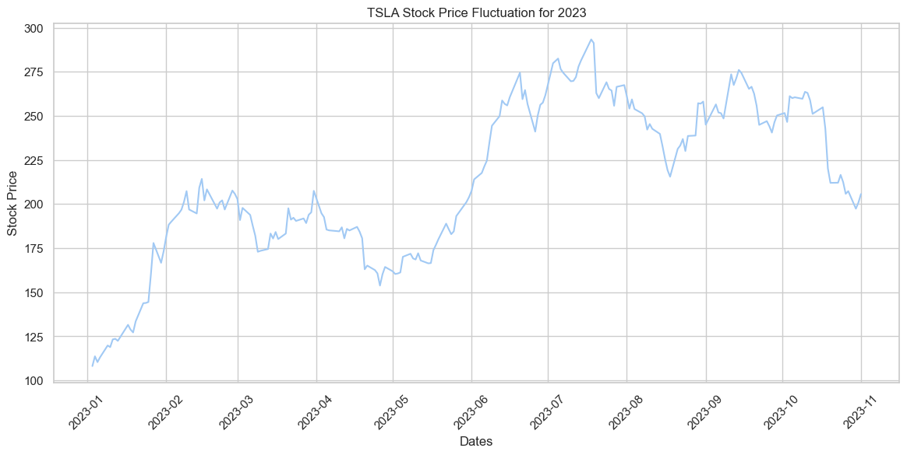
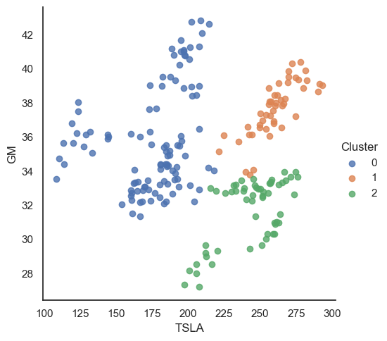
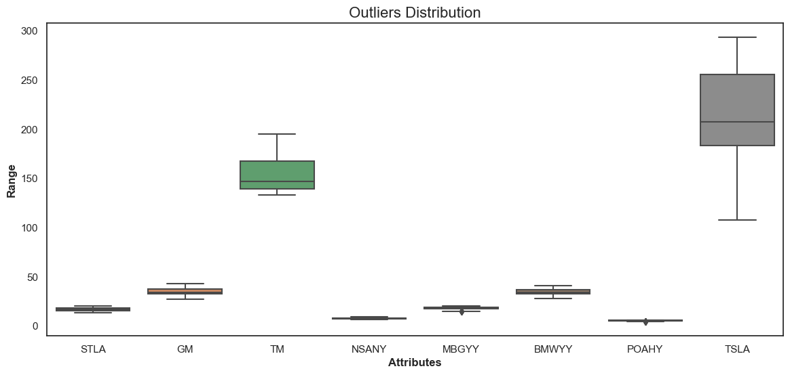

Show the code
import seaborn as sns
import matplotlib.pyplot as plt
import pandas as pd
import numpy as npimport seaborn as sns
import matplotlib.pyplot as plt
import pandas as pd
import numpy as np# Apply the default theme
sns.set_theme(style="whitegrid", palette="pastel")
# Load a local file
stocks = pd.read_csv("stock.csv")
print(stocks) STLA GM TM NSANY MBGYY BMWYY \
0 11.472710 37.606449 128.369995 20.040001 15.427056 25.132998
1 11.945811 38.524120 130.130005 20.250000 15.544848 25.270374
2 12.854664 39.711693 132.160004 20.230000 15.751438 25.443907
3 13.551867 39.594738 133.860001 20.389999 15.934468 25.740351
4 13.433591 39.783680 134.770004 20.440001 16.003330 25.913887
... ... ... ... ... ... ...
1464 18.480000 28.549999 171.610001 7.780000 15.140000 31.129999
1465 18.040001 27.219999 172.809998 7.800000 14.710000 31.059999
1466 18.000000 27.360001 171.399994 7.590000 14.780000 31.219999
1467 18.680000 28.200001 175.179993 7.690000 14.600000 30.940001
1468 18.940001 28.000000 185.779999 7.930000 14.790000 31.530001
POAHY TSLA Dates
0 6.742718 21.368668 2018-01-02
1 6.887550 21.150000 2018-01-03
2 7.072612 20.974667 2018-01-04
3 7.145028 21.105333 2018-01-05
4 7.161119 22.427334 2018-01-08
... ... ... ...
1464 4.440000 205.759995 2023-10-26
1465 4.390000 207.300003 2023-10-27
1466 4.400000 197.360001 2023-10-30
1467 4.410000 200.839996 2023-10-31
1468 4.460000 205.660004 2023-11-01
[1469 rows x 9 columns]stocks.info()<class 'pandas.core.frame.DataFrame'>
RangeIndex: 1469 entries, 0 to 1468
Data columns (total 9 columns):
# Column Non-Null Count Dtype
--- ------ -------------- -----
0 STLA 1469 non-null float64
1 GM 1469 non-null float64
2 TM 1469 non-null float64
3 NSANY 1469 non-null float64
4 MBGYY 1469 non-null float64
5 BMWYY 1469 non-null float64
6 POAHY 1469 non-null float64
7 TSLA 1469 non-null float64
8 Dates 1469 non-null object
dtypes: float64(8), object(1)
memory usage: 103.4+ KBstocks['Dates'] = pd.to_datetime(stocks['Dates']) # Convert the 'Dates' column to datetime format
# Filter the dataframe for only 2023 dates
stocks_2023 = stocks[stocks['Dates'].dt.year == 2023]
print(stocks_2023) STLA GM TM NSANY MBGYY BMWYY POAHY \
1259 13.374442 33.556999 138.279999 6.33 15.643178 27.898378 5.281156
1260 13.805285 34.420227 137.190002 6.32 16.162148 28.553400 5.405082
1261 13.906119 34.727821 135.520004 6.31 16.180681 28.793264 5.433681
1262 14.162791 35.630741 138.970001 6.49 16.421631 29.374483 5.548074
1263 14.318627 35.640663 139.940002 6.56 16.588442 29.439062 5.633869
... ... ... ... ... ... ... ...
1464 18.480000 28.549999 171.610001 7.78 15.140000 31.129999 4.440000
1465 18.040001 27.219999 172.809998 7.80 14.710000 31.059999 4.390000
1466 18.000000 27.360001 171.399994 7.59 14.780000 31.219999 4.400000
1467 18.680000 28.200001 175.179993 7.69 14.600000 30.940001 4.410000
1468 18.940001 28.000000 185.779999 7.93 14.790000 31.530001 4.460000
TSLA Dates
1259 108.099998 2023-01-03
1260 113.639999 2023-01-04
1261 110.339996 2023-01-05
1262 113.059998 2023-01-06
1263 119.769997 2023-01-09
... ... ...
1464 205.759995 2023-10-26
1465 207.300003 2023-10-27
1466 197.360001 2023-10-30
1467 200.839996 2023-10-31
1468 205.660004 2023-11-01
[210 rows x 9 columns]# get the number of rows and columns
len(stocks_2023.index), len(stocks_2023.columns)(210, 9)# Counting NaN values in all columns
nan_count = stocks_2023.isna().sum()
print(nan_count)STLA 0
GM 0
TM 0
NSANY 0
MBGYY 0
BMWYY 0
POAHY 0
TSLA 0
Dates 0
dtype: int64print("----------------------")
print("BASIC STATISTICS: ")
print("----------------------")
stocks_2023.describe()----------------------
BASIC STATISTICS:
----------------------| STLA | GM | TM | NSANY | MBGYY | BMWYY | POAHY | TSLA | Dates | |
|---|---|---|---|---|---|---|---|---|---|
| count | 210.000000 | 210.000000 | 210.000000 | 210.000000 | 210.000000 | 210.000000 | 210.000000 | 210.000000 | 210 |
| mean | 17.076711 | 35.148255 | 154.424142 | 7.846190 | 18.125585 | 34.915196 | 5.415873 | 213.400285 | 2023-06-03 13:42:51.428571392 |
| min | 13.374442 | 27.219999 | 133.479996 | 6.310000 | 14.600000 | 27.898378 | 4.390000 | 108.099998 | 2023-01-03 00:00:00 |
| 25% | 15.901123 | 32.907166 | 139.217495 | 7.372500 | 17.360720 | 32.543494 | 5.219193 | 183.252499 | 2023-03-20 06:00:00 |
| 50% | 16.820590 | 34.420546 | 146.985001 | 7.740000 | 17.959999 | 34.445070 | 5.447980 | 207.575005 | 2023-06-03 12:00:00 |
| 75% | 18.632500 | 37.777060 | 167.952503 | 8.335000 | 19.015000 | 37.187501 | 5.671500 | 255.487499 | 2023-08-17 18:00:00 |
| max | 20.549999 | 42.834282 | 195.039993 | 9.640000 | 20.670000 | 41.189999 | 6.000000 | 293.339996 | 2023-11-01 00:00:00 |
| std | 1.692184 | 3.327676 | 16.635200 | 0.698586 | 1.194182 | 3.125648 | 0.356021 | 44.268249 | NaN |
# Create a visualization
sns.set_theme(style="whitegrid", palette="pastel")
# Create a histogram for TSLA stock prices
sns.lineplot(data=stocks_2023, x='Dates', y='TSLA')
plt.title('TSLA Stock Price Fluctuation for 2023')
plt.xlabel('Dates')
plt.ylabel('Stock Price')
plt.xticks(rotation=45)
plt.show()
In 2023, TSLA’s stock price experienced a sharp rise until mid-year, followed by a decline towards the end of the year.
sns.lineplot(data=stocks_2023, x='Dates', y='TSLA', label='TSLA')
sns.lineplot(data=stocks_2023, x='Dates', y='GM', label='GM')
plt.title('TSLA vs GM Stock Price Comparison for 2023')
plt.xlabel('Dates')
plt.ylabel('Stock Price')
plt.legend()
plt.xticks(rotation=45)
plt.show()
Throughout 2023, TSLA’s stock price exhibited significant volatility, peaking around mid-year before declining, while GM’s stock remained relatively stable, hovering at a much lower price range. The comparison shows a stark contrast in the stock price trajectories of the two companies during this period.
# INSERT CODE TO RE-CREATE THE FOLLOWING PLOTS
# SEE IF THERE IS ANY CORRELATION BETWEEN THE CONTINOUS VARIABLES
# INSERT CODE
# LINEAR MODEL PLOT (lmplot --> Plot data and regression model fits across a FacetGrid)
sns.lmplot(data=stocks_2023, x='TSLA', y='STLA')/Users/isfarbaset/anaconda3/lib/python3.11/site-packages/seaborn/axisgrid.py:118: UserWarning: The figure layout has changed to tight
self._figure.tight_layout(*args, **kwargs)
The scatter plot displays a positive correlation between “TSLA” and “STLA” stock values. As the “TSLA” value increases on the x-axis, the “STLA” value typically rises on the y-axis, with some variability.
# # Convert the dataframe from wide to long format
# # df_melted = stocks_2023.melt(id_vars=['Dates'], value_vars=['STLA', 'GM', 'TM', 'NSANY', 'MBGYY', 'BMWYY', 'POAHY', 'TSLA'],
# # var_name='Brand', value_name='Stock Price')
# print(df_melted)# INSERT CODE TO RE-CREATE THE FOLLOWING PLOTS
# INSERT CODE
sns.set_theme(style="white")
corr = stocks_2023.corr(numeric_only=True) #Compute the correlation matrix
# # Generate a mask for the upper triangle
mask = np.triu(np.ones_like(corr, dtype=bool))
f, ax = plt.subplots(figsize=(7, 5)) #initialize figure
cmap = sns.diverging_palette(230, 20, as_cmap=True) #custom diverging colormap
# # Draw the heatmap with the mask and correct aspect ratio
sns.heatmap(corr, mask=mask, cmap=cmap, vmax=.3, center=0,
square=True, linewidths=.5, cbar_kws={"shrink": .5})
plt.show()
Based on the correlation heatmap, it can be said that the stock prices of the different care brands are mostly negatively correlated.
Based on the different visualizations above, an apt hypothesis to test out could be “TSLA’s significant price surge in 2023 suggests a dominant market influence, potentially driving similar trends in associated automotive stocks”
from sklearn.preprocessing import StandardScaler
from sklearn.cluster import KMeans
import seaborn as sns
import matplotlib.pyplot as plt
stocks_2023 = stocks_2023.drop('Dates', axis=1)
# Standardizing the data (important for K-Means)
scaler = StandardScaler()
scaled_df = scaler.fit_transform(stocks_2023.dropna())
# Using K-Means clustering
kmeans = KMeans(n_clusters=3) # assuming 3 clusters
stocks_2023['Cluster'] = kmeans.fit_predict(scaled_df)
# Visualize using TSLA and another stock, e.g., 'GM'
sns.lmplot(x='TSLA', y='GM', data=stocks_2023, hue='Cluster', fit_reg=False)
plt.show()/Users/isfarbaset/anaconda3/lib/python3.11/site-packages/sklearn/cluster/_kmeans.py:1412: FutureWarning: The default value of `n_init` will change from 10 to 'auto' in 1.4. Set the value of `n_init` explicitly to suppress the warning
super()._check_params_vs_input(X, default_n_init=10)
/Users/isfarbaset/anaconda3/lib/python3.11/site-packages/seaborn/axisgrid.py:118: UserWarning: The figure layout has changed to tight
self._figure.tight_layout(*args, **kwargs)
The visualization displays three distinct clusters of data points based on TSLA and GM stock values. Cluster 0 primarily represents data points where both TSLA and GM have lower stock values, Cluster 1 captures instances with mid-range values, and Cluster 2 comprises of higher TSLA stock values with varying GM values. The spread of the clusters suggests a potential relationship or pattern between the stock values of TSLA and GM over the period of 2023
# Source: https://www.datacamp.com/tutorial/naive-bayes-scikit-learn
def show_boxplot(df):
plt.rcParams['figure.figsize'] = [14,6]
sns.boxplot(data = df, orient="v")
plt.title("Outliers Distribution", fontsize = 16)
plt.ylabel("Range", fontweight = 'bold')
plt.xlabel("Attributes", fontweight = 'bold')
show_boxplot(stocks_2023)
Here we can see the distribution of outliers for various automotive stock attributes. Most stocks, like GM, TM, NSANY, MBGYY, BMWYY, and POAHY, have a narrow range of outlier values, typically below 100. Notably, TM displays a compact outlier range between 100 and 150, while two instances of TSLA stock demonstrate a broader range of outliers, with one reaching up to 300 and another clustering around 150 to 200.
| Topic | Description | Methods |
|---|---|---|
| Correlation Matrix | The matrix depicts correlations between various stock tickers. Blue indicates positive correlation, red indicates negative correlation, and white means no correlation. For instance, “STLA” and “GM” have a strong positive correlation while “TSLA” has low to no correlation with most of the other stocks. | This was done using seaborn’s correlation analysis tool |
| TSLA Stock Price Fluctuation for 2023 | The chart shows Tesla’s stock price performance throughout 2023. Tesla’s stock price has seen a significant rise from January to around March/April and then a fluctuation with a general downtrend. | Matplotlib and Seaborn was used |
| TSLA vs GM Stock Price Comparison for 2023 | This line graph compares the stock prices of Tesla (TSLA) and General Motors (GM) for 2023. While TSLA experienced significant fluctuations in its stock price, GM’s stock price remained relatively stable and lower in comparison. | Matplotlib and seaborn was used |
| Stock Correlation Heatmap | The heatmap visually represents the correlation between various stock tickers. The colors range from blue (positive correlation) to red (negative correlation) with white indicating no correlation. The vertical and horizontal labels denote the stock tickers being compared. | Seaborn was used |
| Outliers Distribution | The box plot demonstrates the distribution of outliers for different stock tickers. It helps in identifying stocks with higher price volatility and potential risks. TSLA and TM seem to have a more extensive range compared to others like STLA and GM. | Box Plot using Seaborn and Matplotlib |
| Stock Price Cluster Analysis (TSLA vs GM) | This scatter plot showcases a cluster analysis between TSLA and GM stock prices. It suggests possible correlation patterns or trading strategies by observing how the stocks cluster together in distinct groups. The colors differentiate the clusters. | Scatter Plot using Matplotlib, Seaborn and SKlearn |
Python with libraries like Pandas, Matplotlib, Seaborn, Numpy and SKlearn